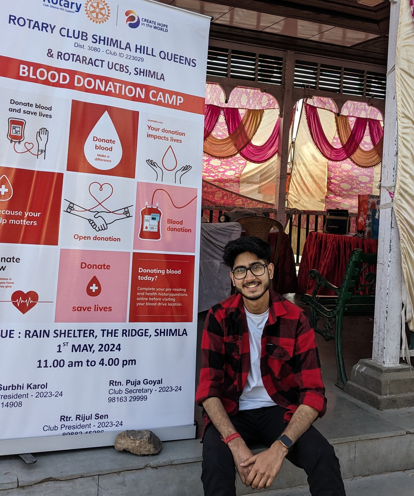

Rijul Sen
I'm MAN 👨🏻
About
I’m Rijul Sen, a final-year business student at HP University College of Business Studies, an aspiring Company Secretary, and a passionate leader in the Rotaract movement. With a deep interest in diplomacy, international relations, and business, I thrive on creating impactful projects and fostering connections.

International Relations Enthusiast & Aspiring Company Secretary
My approach blends strategic thinking, transparency, and a commitment to making a difference.
- Birthday: 17 November
- Website: rijulsen.netlify.app
- City: Shimla, Bharat
- Age: 20
- Degree: Bachelor's
- Email: findrijul@gmail.com
Driven by curiosity and a passion for making a difference, I aim to contribute meaningfully to global conversations and foster positive change in every endeavor.
Resume
Dedicated to fostering meaningful connections and driving impactful initiatives. Committed to blending business acumen with a passion for diplomacy and global change.
Summary
Rijul Sen
Motivated and results-driven final-year business student with a strong foundation in diplomacy, international relations, and business management. Currently pursuing a career as a Company Secretary, leveraging strategic thinking, leadership, and a commitment to creating meaningful global impact. Experienced in organizing community-driven initiatives, managing teams, and promoting transparency in operations.
- Shimla, Bharat
- findrijul@gmail.com
Education
Company Secretary
(Pursuing)
Institute of Company Secretaries of India
Bachelor of Business Administration
2022 - 2025
HP University College of Business Studies
Skills
- Spearheaded community service initiatives, fostering collaboration across multiple Rotaract and Rotary clubs.
- Organized impactful events such as Rakhi Celebration with military personnel and cow shelter visits.
- Managed team responsibilities and oversaw the club's social media and membership data.
Leadership Experience
President, Rotaract Club of UCBS
(2023-2025)
Shimla, HP, India
- Strategic Planning & Leadership
- Diplomacy & International Relations
- Community Engagement & Public Speaking
- Project Management & Event Coordination
Publications
Intergenerational Perspectives on Elder Rights: Socio-Legal Challenges and Solutions in Contemporary Society
2024
- Published in International Journal in Management, Ojas. This research examines the socio-legal challenges faced by the elderly and proposes actionable solutions to address their rights in a rapidly changing societal framework.
Interests
- International Diplomacy & Negotiation
- Global Business Strategy
- Community Development
Portfolio
A comprehensive view of my contributions to research, leadership, and impactful community initiatives.
Research Paper
Title: Intergenerational Perspectives on
Elder Rights: Socio-Legal Challenges and Solutions in
Contemporary Society
Published in: International Journal in
Management, OJAS
Year: 2024
Presentation and Conferences
Event: Presented a research paper titled
*Intergenerational Perspectives on Elder Rights* at UILS
Conference.
Event: Participated in Model United Nations
(MUN) at St. Bede’s College, Shimla, 2023.
Skills Demonstrated: Diplomacy, public
speaking, and global issue resolution.
Projects and Community Engagement
As President of the Rotaract Club of UCBS, I spearheaded multiple initiatives aimed at fostering community development and meaningful social impact.
- Blood Donation Camps: Organized and mobilized community support for successful donation drives.
- Tree Plantation Drives: Promoted environmental sustainability through local tree-planting initiatives.
- Cow Shelter Visit: Coordinated Independence Day event to support animal welfare, including feeding and donations.
- Rakhi Celebration: Distributed 100 Rakhi sets to military personnel and police, celebrating their contributions.
- World Photography Day Competition: Hosted a creative contest to inspire artistic expression within the community.
- Candle March for Justice: Led a march advocating for justice, fostering solidarity and raising awareness.
- A Day of Joy and Care with Dogs: Celebrated International Dog Day, spending time with shelter dogs and promoting their care.
- Trip to Leh-Ladakh: Organized a memorable trip focusing on camaraderie and cultural exploration.
For more details on these projects, visit Rotaract UCBS Website.
Contact Me
Feel free to reach out using the information below. I look forward to connecting!